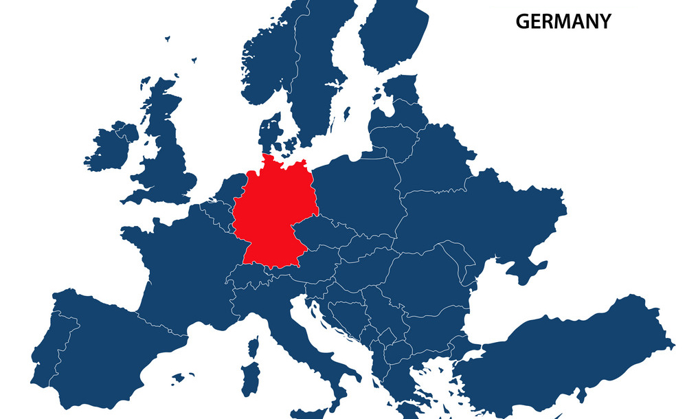
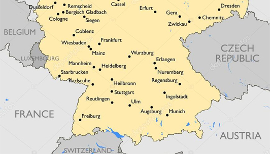

Moeda : Euro.
Capital : Berlim.
População média : 82,845,856.
Tamanho total : 357,021 km2.
Fronteiras : Dinamarca, Polónia, República Checa, Áustria, Suiça, França, Bélgica, Luxemburgo e Holanda.
Coordenadas geográficas : 51 00 Norte, 9 00 Este.
Continente : Europa.
Principais cidades : Berlim, Hamburgo, Munique, Cologne, Frankfurt, Stuttgart e Dusseldorf.
Produtos agrícolas : Batatas, trigo, cevada, couves, gado, porcos e galinhas.
Recursos naturais : Carvão, lignito, gás natural, ferro, cobre, níquel, urânio, potassa, sal, materias para construção e madeira.

Capital : Berlim

População média : 82,845,856

Tamanho total : 357,021 km2

Fronteiras - cima

Fronteiras - baixo

Outras cidades principais - Cologne

Outras cidades principais - Dusseldorf

Outras cidades principais - Frankfurt

Outras cidades principais - Hamburg

Outras cidades principais - Munich

Outras cidades principais - Stuttgard

Principais formações geológicas - Alpes Alemães

Principais formações geológicas - Florest Negra

Principais formações geológicas - "Ore Mountains"

Principais formações geológicas - Floresta Palatine

Principais formações geológicas - Vale Rhine

Principais formações geológicas - Spreewald

Principais formações geológicas - Vogelsberg